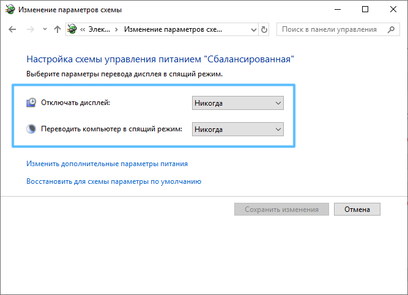
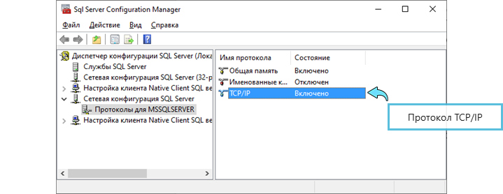

1. Состав исполнителей:
Состав исполнителей на железнодорожных участках:
| Исполнители |
Разряд квалификации не менее |
Количество исполнителей |
| Инженер сервисной организации |
- |
1 |
| Электромеханик центрального поста |
- |
1 |
2. Условия производства работ
2.1. Проверка базовых настроек/параметров компьютера производится только на находящемся в резерве автоматизированном рабочем месте поездного диспетчера (далее – АРМ ДНЦ) и Сервере стойки поста ДЦ.
ВНИМАНИЕ: При отсутствии резервирования АРМ ДНЦ, работа выполняется в технологическое «окно» с согласия поездного диспетчера.
2.2. Работа производится электротехническим персоналом, имеющим группу по электробезопасности при работе в электроустановках до 1000 В не ниже III, перед началом работ проинструктированным в установленном порядке.
2.3. К работе допускается обслуживающий персонал, прошедший специальную подготовку и выдержавший испытания в знаниях условий эксплуатации системы в соответствии с процедурами, принятыми в ОАО «РЖД».
2.4. Допуск на объект, оформление записей в журналах, контроль качества работ, выполняемых подрядными организациями, участие в приемке выполненных работ осуществляется эксплуатационным персоналом в соответствии с требованиями Инструкции по техническому обслуживанию и ремонту устройств и систем сигнализации, централизации и блокировки, утвержденной распоряжением ОАО «РЖД» от 30 декабря 2015 г. № 3168р.
3. Средства защиты, измерений, технологического оснащения; монтажные приспособления, испытательное оборудование, инструменты, техническая документация
Диспетчерская централизация ДЦ «Юг». Руководство по эксплуатации 36818650.39003.001-01 РЭ;
Диспетчерская централизация ДЦ «Юг». Технология обслуживания. Технологические карты по техническому обслуживанию ДЦ «Юг» на базе КП «Круг» 36818650.39003.001-01 ТО.
4. Подготовительные мероприятия
4.1. Подготовить техническую документацию, указанную в разделе 3.
5. Обеспечение безопасности движения поездов
5.1. Проверка базовых настроек/параметров компьютера производится в технологическое «окно» с согласия поездного диспетчера (далее – ДНЦ).
5.2. Работа выполняется без оформления записи в Журнале осмотра путей, стрелочных переводов, устройств сигнализации, централизации и блокировки, связи и контактной сети формы ДУ-46 (далее – Журнал осмотра).
5.3. При выполнении работы обеспечить безопасность движения в соответствии с требованиями Инструкции по обеспечению безопасности движения поездов при технической эксплуатации устройств и систем СЦБ ЦШ-530-11, утвержденной распоряжением ОАО «РЖД» от 20 сентября 2011 г. № 2055р.
Примечание. Здесь и далее по тексту целесообразно проверить действие ссылочных документов. Если ссылочный документ заменен (изменен), то при пользовании данной картой технологического процесса следует руководствоваться заменяющим (измененным) документом. Если ссылочный документ отменен без замены, то применяется та часть текста, где не затрагивается ссылка на этот документ.
6. Обеспечение требований охраны труда
6.1. При выполнении технологических операций следует руководствоваться требованиями «Инструкции по охране труда для электромеханика и электромонтера устройств сигнализации, централизации и блокировки в ОАО «РЖД» от 03 ноября 2015 № 2616р и «Правилами по охране труда при техническом обслуживании и ремонте устройств сигнализации, централизации и блокировки в ОАО «РЖД» (ПОТ РЖД-4100612-ЦШ-215-2021), утверждёнными распоряжением ОАО «РЖД» от 19 февраля 2021 г. №346/р.
ВНИМАНИЕ. Место работ должно иметь достаточное для их производства освещение. При необходимости следует применять переносные осветительные приборы.
7. Технология выполнения работ
Проверка базовых настроек/параметров компьютера.
7.1. Проверить наличие учетных записей, для этого перейти в командную строку (Пуск -> Выполнить) и запустить оснастку администрирования учетных записей, выполнив команду «control userpasswords2» (Рисунок 1).
Рисунок 1. Учетные записи пользователей.

Флажок «Требовать ввод имени пользователя и пароля»

Учетные записи
Кнопка «Применить»
ПРИМЕЧАНИЕ: Инсталлятор ПО ДЦ «ЮГ» автоматически создает следующие учетные записи:
- Админ (права Администратора).
- ДНЦ (права Пользователя).
- ШН (права Опытного пользователя).
7.2. Проверить автоматический вход в систему.
7.2.1. Установить флажок «Требовать ввод имени пользователя и пароля» (Рисунок 1).
7.2.2. Выбрать нужную учетную запись в списке пользователей.
7.2.3. Снять флажок «Требовать ввод имени пользователя и пароля» (Рисунок 1).
7.2.4. Нажать кнопку «Применить» (Рисунок 1), в открывшемся окне заполнить поля пароля и подтверждения пароля пользователя, нажать кнопку «ОК» (Рисунок 2).
Рисунок 2. Автоматический вход в систему.
Ввод пароля и подтверждение пароля
ВНИМАНИЕ: При смене учетной записи пользователя для входа в систему необходимо перезагрузить систему. Проверка учетной записи пользователя производится из командной строки командой «whoami». В ответ на эту команду система выводит имя хоста и имя учетной записи (например, dc-ug-6\ДНЦ).
7.3. Проверить настройки управления электропитанием.
7.3.1. Перейти в командную строку (Пуск -> Выполнить) и запустить оснастку управления электропитанием командой «powercfg.cpl».
7.3.2. В появившемся окне выбрать «Сбалансированный (рекомендуется)» план управления электропитанием, далее выбрать вкладку «Настройка плана электропитания» (Рисунок 3).
Рисунок 3. Окно «Электропитание».
План «Сбалансированный»
Вкладка «Настройка плана электропитания»
7.3.3. Убедиться, что для параметров «Отключать дисплей» и «Переводить компьютер в спящий режим» выбрано значение «Никогда» (Рисунок 4).

Рисунок 4. Вкладка «Настройка плана электропитания».
Параметры «Отключать дисплей» и «Переводить компьютер в спящий режим»
7.4. Проверить функционирование прикладных служб.
7.4.1. Перейти в командную строку (Пуск -> Выполнить) и запустить оснастку управления службами командой «services.msc».
ПРИМЕЧАНИЕ: Инсталлятор ПО ДЦ «ЮГ» устанавливает две службы:
- paArchiveService – служба архивирования и синхронизации времени.
- paService – служба удаленной загрузки файлов.
7.4.2. Запустить оснастку «Службы», в появившемся списке проверить наличие служб paArchiveService и paService, убедиться, что для них указан автоматический тип запуска и они выполняются (Рисунок 5).
Рисунок 5. Службы paArchiveService и paService.
Службы paArchiveService и paService
7.5. Проверить настройки сетевого протокола SQL сервера.
ВНИМАНИЕ: Проверка выполняется только на компьютерах шлюз-сервер поста ДЦ и зависит от версии установленного SQL-сервера. На операционных системах Windows XP/7, Windows Server 2003 устанавливается версия сервера MSDE 2000, на системах Windows 10, Server 2008 и выше – SQL Server 2012 Express Edition.
7.5.1. Проверка настройки сетевого протокола для MSDE 2000.
7.5.1.1. Запустить утилиту «svrnetcn.exe».
7.5.1.2. Убедиться, что протокол TCP/IP находится в правом списке разрешенных протоколов (Enabled protocols) (Рисунок 6).
Рисунок 6. Список разрешенных протоколов.
Список неразрешенных протоколов
Кнопка «Enable>>»
Список разрешенных протоколов
Кнопка «Properies»
ПРИМЕЧАНИЕ: Если протокол TCP/IP находится в левом списке неразрешенных протоколов (Disabled protocols) (Рисунок 6), его необходимо выбрать и нажать кнопку «Enable>>» (Рисунок 6).
7.5.1.3. Выбрать протокол TCP/IP, нажать кнопку «Properies» (Рисунок 6), просмотреть его свойства.
7.5.1.4. В открывшемся окне убедиться, что значение порта, используемого протоколом - 7433 (Рисунок 7).
Рисунок 7. Свойства протокола TCP/IP.
ВНИМАНИЕ: По умолчанию SQL сервер использует порт 1433.
ВНИМАНИЕ: Если значение порта отличается от 7433, необходимо его изменить, после чего необходимо выполнить перезапуск операционной системы.
7.5.2. Проверка настроек сетевого протокола для SQL Server 2012 Express.
7.5.2.1. Запустить оснастку «SQLServerManager11.msc».
7.5.2.2. В открывшемся окне убедиться, что протокол TCP/IP в правом списке в состоянии «Включен» (Рисунок 8).

Рисунок 8. Протокол TCP/IP.
Протокол TCP/IP
ПРИМЕЧАНИЕ: Если протокол TCP/IP выключен, его надо включить опцией «Включить» контекстного меню.
7.5.2.3. В контекстном меню выбрать опцию «Свойства», откроется окно свойств протокола для всех сетевых интерфейсов компьютера (Рисунок 9).
Рисунок 9. Свойства TCP/IP.
Порт «TCP-порт». Аналогично в IP2, IP3
7.5.2.4. Убедиться, что порт «TCP-порт» установлен в значение 7433 (Рисунок 9) для всех сетевых интерфейсов, если это не так, необходимо установить значение 7433.
7.5.3. Проверка настроек брандмауэра.
7.5.3.1. Перейти в командную строку (Пуск -> Выполнить) и запустить оснастку свойств брандмауэра «firewall.cpl».
ПРИМЕЧАНИЕ: Брандмауэр (сетевой экран) обеспечивает контроль сетевых соединений и защиту компьютеров от воздействия по локальной сети. Брандмауэр должен быть включен для всех сетевых адаптеров. Для обеспечения возможности сетевого взаимодействия модулей ПО ДЦ «ЮГ» инсталлятор создает в брандмауэре исключения, позволяющие программным модулям открывать определенные порты.
7.5.3.2. В открывшемся окне свойств брандмауэра убедиться, что он включен (Рисунок 10).
Рисунок 10. Окно свойств брандмауэра.
Вкладка «Дополнительные параметры»
Состояние брандмауэра
7.5.3.3. Перейти на вкладку «Дополнительные параметры» (Рисунок 10), в левой части окна в списке выбрать опцию «Правила для входящих подключений» (Рисунок 11).
Рисунок 11. Правила для входящих подключений.
Опция «Правила для входящих подключений»
Правила/исключения
7.5.3.4. Убедиться, что в списке правил есть следующие правила (исключения) для программных модулей из состава ПО ДЦ ЮГ: PA_paArchiveSvc, PA_MdmAgent, PA_BridgeTcp, PA_paService, PA_Monitor, PA_RssMpk, PA SQLEXPRESS (Рисунок 11).
ПРИМЕЧАНИЕ: Перечисленные правила позволяют соответствующим программным модулям открывать необходимые порты для входящих подключений. Если какое-то указанное правило отсутствует, его необходимо создать, добавив правило для соответствующего программного модуля. Для этого необходимо в правой части окна кликнуть опцию «Создать правило», в открывшемся окне выбрать опцию «Программа» и задать точный путь к файлу модуля, выбрав модуль в проводнике с помощью кнопки «Обзор». Имя правила не имеет принципиального значения, главное, при создании правила точно указать программу.
ПРИМЕЧАНИЕ: На версиях ОС Windows XP SP2 и ниже отсутствует возможность установки правил на программу. В этом случае в оснастке брандмауэра устанавливаются разрешения на входящие подключения к отдельным портам TCP/IP, которые используются прикладным ПО ДЦ «ЮГ», а именно:
1010 - порт для подключения к исходящему потоку состояния;
7433 - порт для подключения к SQL-серверу;
8080 - порт для подключения к службе загрузки файлов;
64465 - порт для подключения к специализированной службе синхронизации времени.
7.6. Оформить запись в Журнале осмотра.
Пример записи:
В технологическое «окно» будет производиться переход на резервный АРМ ДНЦ и управление станцией с резервного АРМ ДНЦ.
ШНД
ДНЦ
7.7. Провести переключение активности с основного АРМ ДНЦ на резервный согласно ТНК ЦШ 0197-2016.
7.8. Выполнить проверки базовых настроек/параметров компьютера на основном АРМ ДНЦ в соответствии с пунктами 7.1-7.5.
7.9. Выполнить проверки базовых настроек/параметров компьютера на АРМ ШН в соответствии с пунктами 7.1-7.5.
7.10. Выполнить проверки базовых настроек/параметров компьютера на основном и резервном Сервере стойки поста ДЦ в соответствии с пунктами 7.1-7.5.
7.11. В случае невозможности провести проверку базовых настроек/параметров компьютера передать информацию диспетчеру центра диагностики и мониторинга для организации оповещения разработчика системы (центра сервисного обслуживания) для принятия мер.
8. Заключительные мероприятия, оформление результатов работы
После окончания проверки базовых настроек/параметров компьютера оповестить ДНЦ об окончании работы, сделать запись в журнале ШУ-2 о проведенной работе и внести результаты выполнения работы в систему ЕК АСУИ в соответствии с требованиями, изложенными в разделе 4 «Порядка планирования, учета и контроля выполнения работ в хозяйстве автоматики и телемеханики», утверждённого распоряжением ОАО «РЖД» от 13 января 2020 г. №20/р.
Результаты работы по сопровождению программного обеспечения специализированная организация оформляет в журнале учета выполненных работ по техническому обслуживанию и ремонту устройств и систем ЖАТ по форме, представленной в регламенте взаимодействия между участниками процесса технического обслуживания и ремонта систем и устройств железнодорожной автоматики и телемеханики ОАО «РЖД», осуществляемых специализированными организациями, утвержденном распоряжением ОАО «РЖД» от 30 декабря 2017 г. № 2827р.
Начальник отдела ПКБ И
Конструктор 1 категории ПКБ И
Е.Н. Иванов
В.В. Харламов